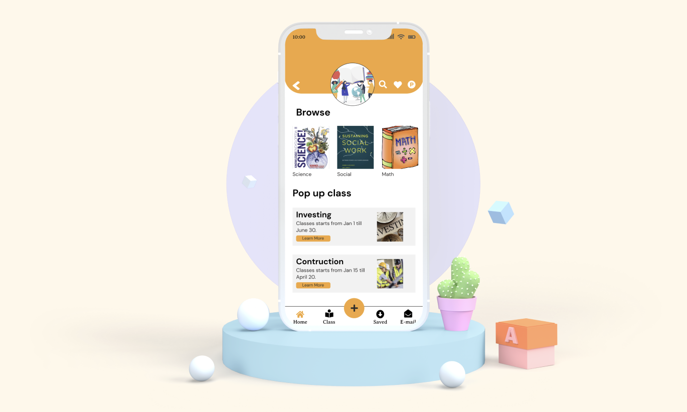

Education Corner App
Project Overview
The Produt: Education corner is one stop for everybody. You can take online or in person classes. We are associated with NGOS to provide pop up classes on various topics. The company goal is to provide quality education for everybody including people who are struggling financially.
Project Duration Jan 2024 - Apr 2024


The Problem
250 million children are currently missing out on any form of schooling, a figure reported by UNESCO, highlighting a pressing global issue. This concerning trend deprives countless children of their fundamental right to education and underscores the urgency for action
My Role
UX Designer leading the Education Corner
The Goal
Develop a compact, user-friendly mobile app to support global education access, featuring offline content download capability.
My Responsibility
Conducting interviews, paper and digital wireframing, low and high-fidelity prototyping, conducting usability studies, accounting for accessibility, iterating on designs and responsive design.
User Research Summary
The objective of our user research was to understand the diverse needs, challenges, and aspirations of individuals facing financial constraints in accessing education. Through in-depth interviews, we aimed to gather insights to inform the design of a cross-platform tool focused on providing affordable and practical learning opportunities. After conducting research with various groups, we discovered that 90% of the participants had to stop pursuing education because it was too expensive and they were facing financial problems at home. As a result, they were compelled to sacrifice education, among other necessities. This highlights that how financial constraints access to education, emphasizing the urgent need for affordable educational solutions.
User Research Pain Points
Financial Constraints
Limited financial resources hinder access to quality education and practical skill development
Limited Access to Technical skills
Infrequent access to technical classes and resources limits skill development opportunities
Costly and taking up memory
Better education are costly making people like us unable to afford and we have small devices and adding too many apps takes memory space

No Internet access
Data are expensive and limited access to wifi